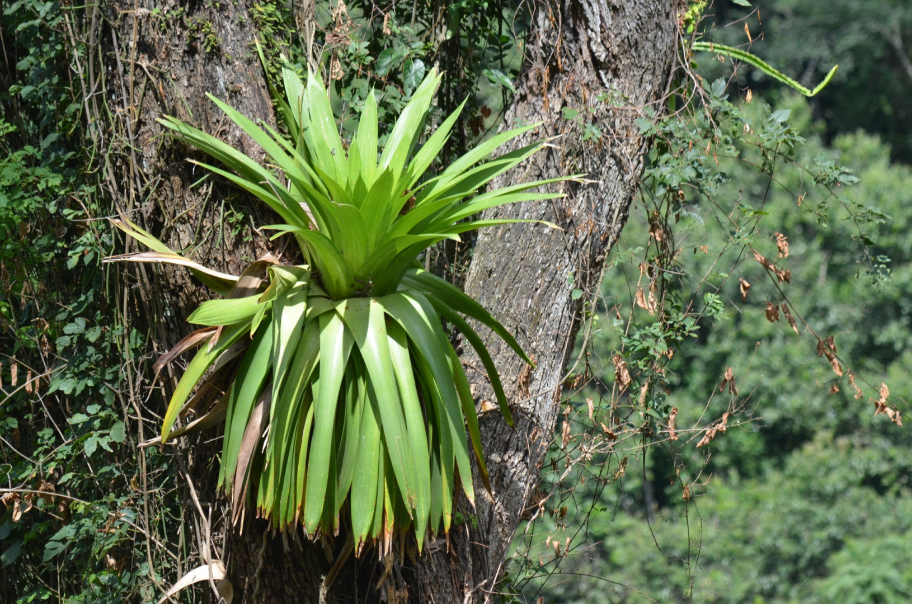
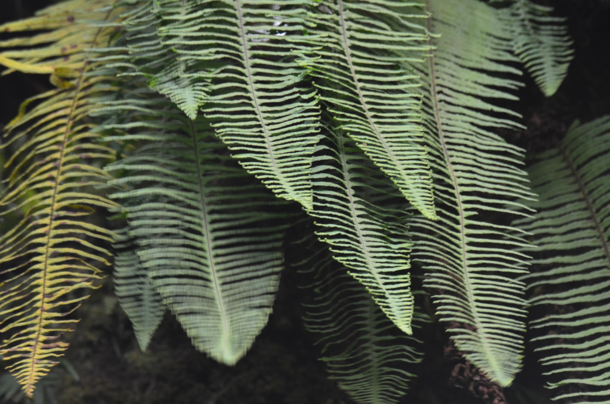
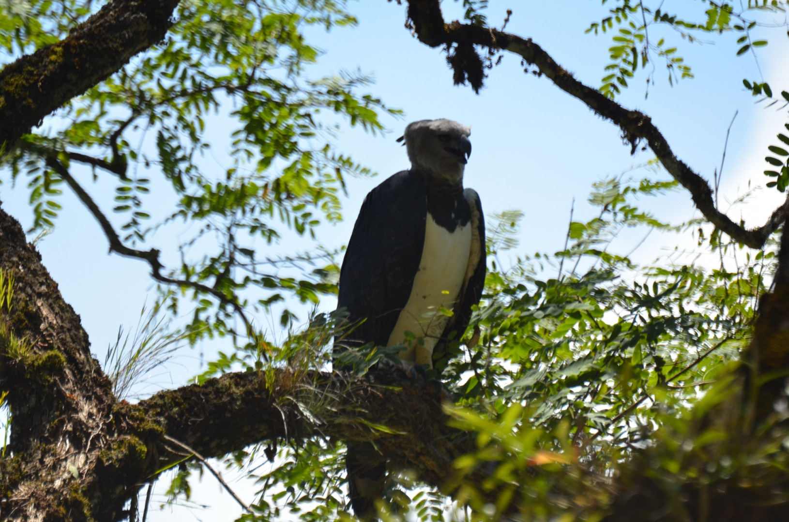
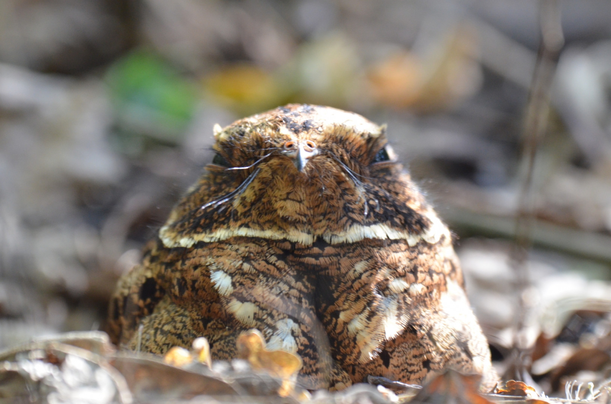
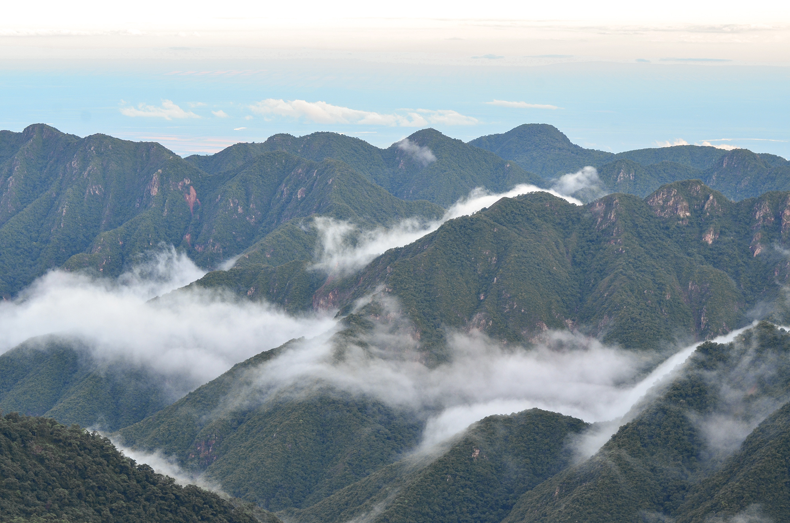

Se extiende sobre las laderas orientales de las Sierras de Calilegua, en la provincia de Jujuy. Esta joya, que forma parte de la Reserva de Biosfera de las Yungas (UNESCO), invita a explorar sus profundos valles y quebradas cubiertos por una vegetación exuberante, que alberga especies fascinantes como el caí de las Yungas, el yaguareté, la taruca y el tucán grande.
El clima es subtropical serrano con estación seca invernal. Las temperaturas medias oscilan desde los 28ºC en verano a los 17ºC en invierno; los registros máximos absolutos de 40ºC indican veranos calurosos. Las precipitaciones son de 1800 mm anuales, concentradas durante los meses estivales. Durante el período invernal son habituales las nevadas en las cumbres serranas.
Flora
Calilegua exhibe una notable biodiversidad, característica de los ambientes selváticos. En el Parque se registraron 123 especies de árboles, 77 de helechos, 120 mamíferos y 350 de aves, y esto considerando solamente algunas de las formas de vida más conspicuas. A ellas debemos sumar innumerables enredaderas, orquídeas, arbustos y bromelias entre los vegetales y las numerosas formas de insectos y otros invertebrados que pueblan estas selvas y bosques.
Esta diversidad se distribuye en distintos pisos, originados en las diferencias de altura, temperatura y humedad. Se pueden distinguir la selva de transición o pedemonte; la selva montana, el bosque montano, el pastizal montano o de neblina y los prados altoandinos.
Fauna
Muchas de las especies presentes se hallan en riesgo de extinción, como la taruca o huemul del norte, el yaguareté y el águila poma. Otras constituyen significativas rarezas como la rana marsupial y el surucuá aurora, ave emparentada con el quetzal centroamericano. También habitan ardillas rojas, monos capuchinos, corzuelas, zorros de monte y el coendú, el puerco espín local, junto a una enorme variedad de aves.





